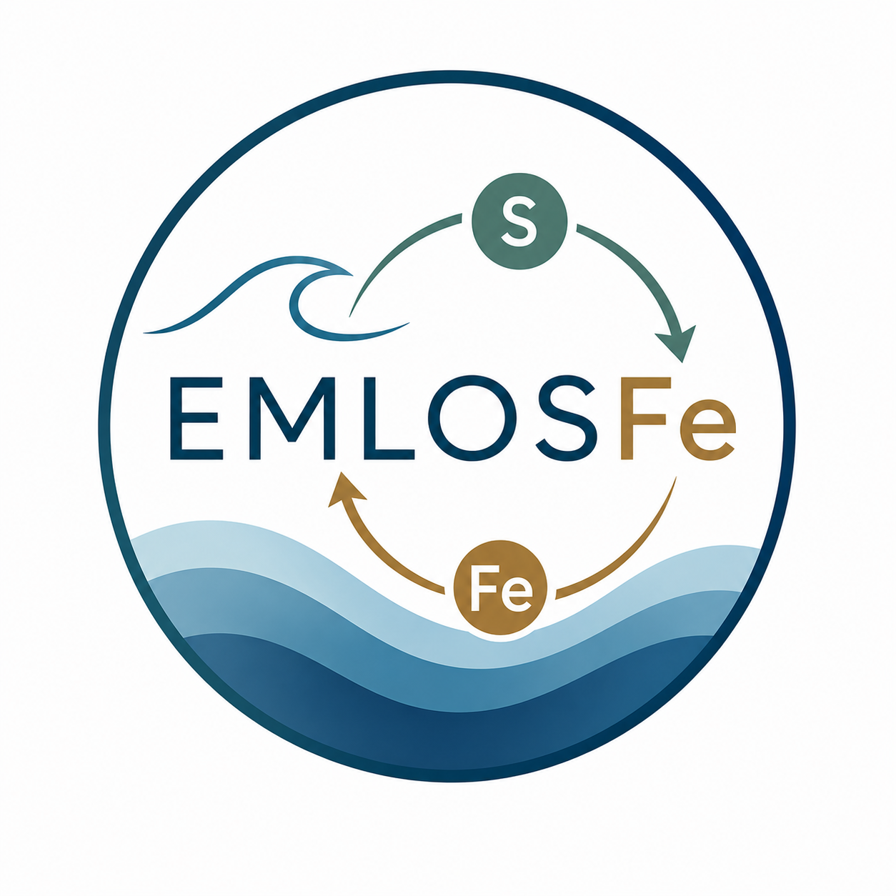

EMLOSFe
Explorando el Impacto del Ciclo de Azufre en la Especiación y Biodisponibilidad del Hierro en el Entorno Marino.
Proyecto PID2023-148860OB-I00
Los recientes avances en genómica y proteómica han permitido profundizar notablemente en la comprensión de las complejas interacciones entre el hierro y la membrana celular del fitoplancton. Sin embargo, todavía estamos lejos de alcanzar una comprensión integral, a escala ecológica, que permita modelizar de forma global los procesos de adquisición de hierro por parte del fitoplancton oceánico. Aunque los estudios con cultivos de plancton han demostrado que la bioasimilación de hierro se ve favorecida cuando este se encuentra en su forma reducida, Fe(II), los mecanismos responsables de su reducción e internalización aún no se han esclarecido completamente, especialmente en lo que respecta a cómo el fitoplancton promueve esta reducción en las proximidades de la célula para facilitar su captación.
Proponemos que el enfoque tradicional, centrado en identificar mecanismos complejos, excepcionales y multigénicos, presentes en unas pocas especies, puede resultar engañoso a la hora de abordar esta cuestión desde una perspectiva ecológica amplia. La universalidad, importancia y antigüedad evolutiva de los requerimientos de hierro sugieren que abordar su adquisición como un rompecabezas biológico compuesto por mecanismos diversos podría no ser la vía más adecuada. En su lugar, señalamos a un grupo concreto de compuestos que cumplen con los requisitos de ubicuidad y potencial redox, y que podrían desempeñar un papel clave en la reducción y captación de hierro en aguas superficiales: los compuestos orgánicos con azufre reducido (en adelante, compuestos ORS).
Dentro de estos, destacan especialmente los tioles (R–SH), debido a su presencia universal en todos los organismos, su rápida bioacumulación frente a metales tóxicos, su papel en la regulación del estrés oxidativo y su exudación en altas concentraciones por parte del fitoplancton. Mediante técnicas cromatográficas se ha identificado una amplia variedad de compuestos ORS en ambientes marinos, como cisteína, glutatión, cistina, glutatión oxidado, ácido 3-mercaptopropiónico, ácido tioglicólico, 2-mercaptoetanol, varios dímeros con aminoácidos (arginina–cisteína, glutamina–cisteína, γ-glutamato–cisteína), fitoquelatinas, entre otros. A pesar de esta diversidad, la investigación en este campo se detuvo hace más de una década, posiblemente debido a la percepción de que se trataba de compuestos con escasa relevancia ambiental.
Lo que hace especialmente interesantes a los compuestos ORS en el marco de nuestra hipótesis es su moderada estabilidad en agua de mar oxigenada en ausencia de luz, combinada con su rápida oxidación y fotodegradación bajo radiación solar. Esta oxidación rápida en las cercanías celulares, antes de que el agente reductor del hierro pueda difundirse, resulta clave para mantener una captación eficiente desde el punto de vista energético. De lo contrario, sería necesario mantener concentraciones ambientalmente elevadas y constantes de compuestos ORS para que intervinieran de forma eficaz en la captación del hierro.
Diversas observaciones respaldan esta hipótesis. Por ejemplo, la cisteína es capaz de reducir Fe(III) cuando forma un complejo en la superficie de goethita. La fotooxidación de tioles reducidos no genera enlaces disulfuro, sino formas más oxidadas. Asimismo, los tioles reaccionan con especies reactivas del oxígeno, lo que podría ralentizar la oxidación del Fe(II). Trabajos clásicos describen incluso la formación de superóxido, un reconocido agente reductor del Fe(III), a partir de la autooxidación de tioles; sin embargo, sospechamos que dichos resultados podrían deberse a artefactos analíticos, ya que en aquel entonces no existían protocolos robustos para detectar superóxido. No obstante, es bien conocido que la irradiación de materia orgánica disuelta (DOM) incrementa la formación de superóxido, y, hasta donde sabemos, no se ha estudiado si la fracción ORS del DOM participa en dicha fotoformación.
Partimos, por tanto, de la hipótesis de que los compuestos ORS presentes en aguas superficiales marinas—especialmente los tioles—participan en reacciones fotoquímicas inducidas por la radiación solar que promueven la reducción de Fe(III) a Fe(II), la forma más biodisponible.

Objetivos del proyecto
- Evaluar experimentalmente la eficiencia del proceso propuesto.
- Identificar, entre los numerosos compuestos ORS, aquellos directamente implicados.
- Aportar solidez teórica a la hipótesis mediante cálculos moleculares y termodinámicos.
- Investigar las rutas químicas implicadas (transferencia de carga ligando–metal, reacciones de transporte electrónico, generación de intermedios como el superóxido, etc.).
- Replicar el sistema químico en cultivos celulares y observar si se inducen cambios significativos en la captación de hierro.